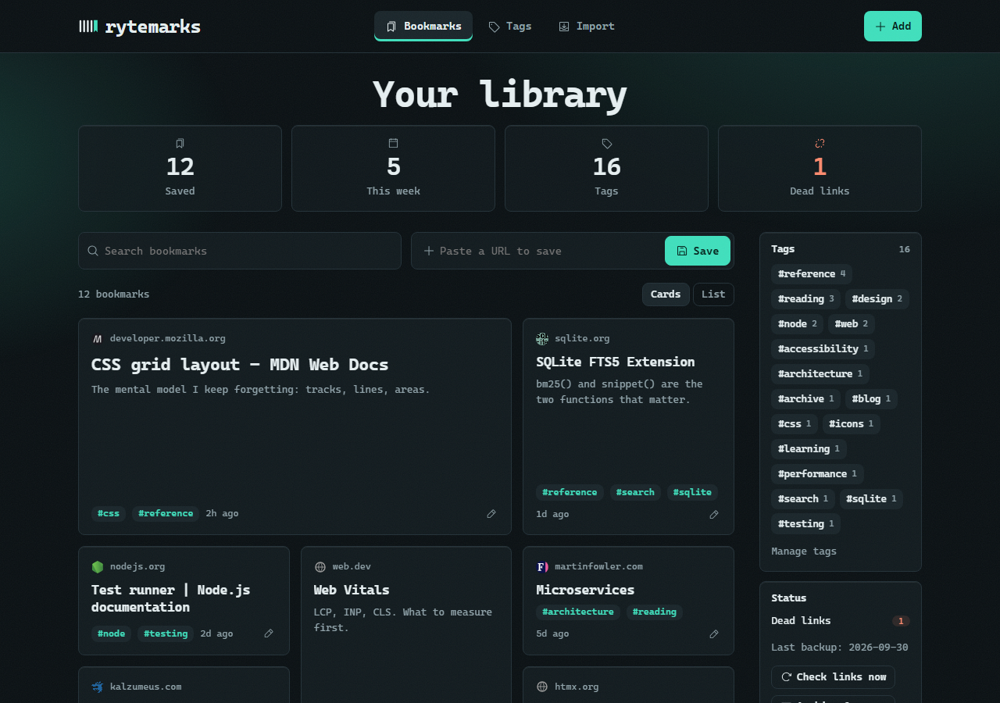
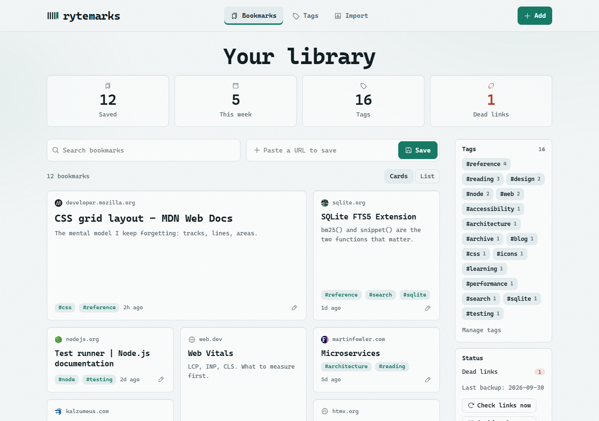
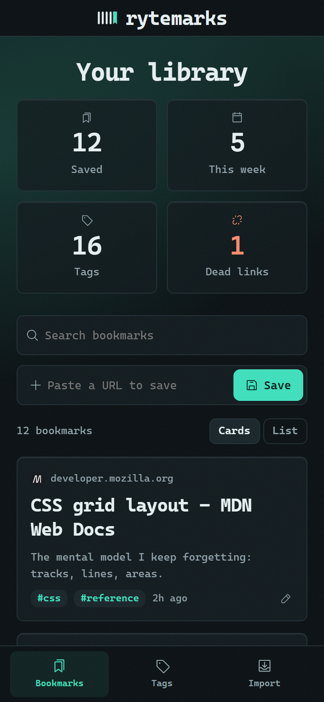

rytemarks: a private bookmark manager that doesn't lose your data
A self-hosted app to save, tag and search web pages, with the whole archive in one SQLite file. Built end to end by me: backend, search, UI, tests, CI.
218automated tests, all passing
~3,300lines of JavaScript, app and tests
0third-party requests at runtime
2 OSCI on Ubuntu and Windows



The problem
Hosted bookmark tools lock your data in and can disappear. I wanted one that is fast, works offline on my own machine, and can't lose or leak what I've saved.
What I built
- Full-text search over titles, notes and the extracted text of every saved page (SQLite FTS5 + Mozilla Readability), with highlighted snippets and multi-tag filtering.
- One-click save through a bookmarklet. Saving is instant; the page is fetched in the background with a cap on concurrent fetches.
- Data safety: automatic daily backups with rotation, undo for deletes, JSON/CSV export, and restore from your own export.
- Import from Chrome, Firefox, Edge, Safari and Raindrop, with a preview step; folders become tags.
- Duplicate-proof: URL normalisation strips tracking parameters and trailing slashes, plus a dry-run-first tool to merge old duplicates safely.
- Weekly dead-link checker on a cron schedule.
- Responsive UI with light/dark themes, keyboard shortcuts and a command palette.
Decisions I'd defend
- Security for a local app: binds to 127.0.0.1 only, rejects non-localhost Host headers (DNS-rebinding guard), refuses cross-site POSTs, and gates saving behind a secret key so a web page can't make the server fetch URLs.
- Safe destructive operations: the dedupe tool defaults to a dry run and takes a backup before it applies.
- Spreadsheet-safe CSV: export neutralises cells starting with
= + - @. - Small, boring stack: one SQLite file, no ORM, no front-end framework. Easy to run, back up and reason about.
Testing and delivery
Tests run against a throwaway database and a fake local website, so they need no network. CI runs them on Ubuntu and Windows. The repo ships with a licence, contributing guide and security policy.
Need something similar?
I build Node.js and Python backends, scrapers and automations, small web apps, and fix bugs in existing code. Message me with what you need and a budget range.